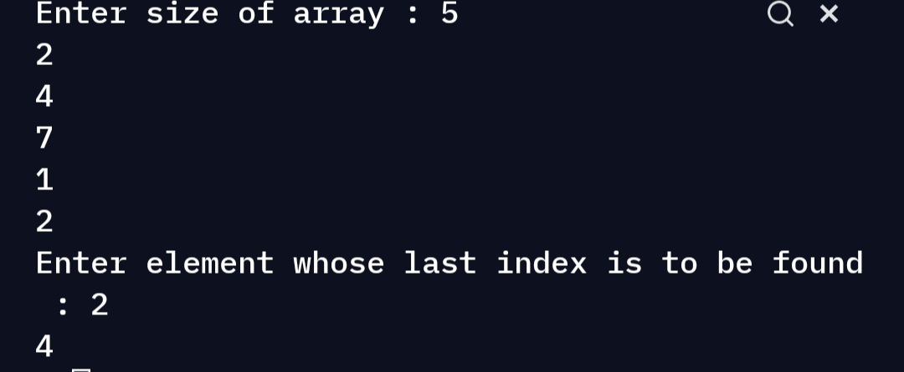

Last index of an element in an array.
Aim
The aim is to create a python code to get last index of an element in an array.
Purpose
The purpose is to come up with an efficient solution while implementing recursion.
Short description of project
The program takes 3 inputs. 1.size of array. 2.Array elements. 3.Elements whose last occurrence is to be found.
Workflow of the Project
- We will divide the array into 2 parts. 1.The first element.
- THE remaining elements.
- We will work on first element and recursion will work on rest.
- First we define the base case which will be if startindex of array is greater than length of array , return -1.
- Now we will call recursion on other part of array and see if the element is present there or not.
- If the element is present we return index+1.
- If not then we check the first element.
- If the first element is equal then we return 0 else return -1.
Required libraries
None
Compilation Steps
Run the script, after that :
- User is prompted to enter size of array followed by array elements and number whose occurrence is to be checked.
- Last index on which the element occurred is printed.
5 2 3 5 1 2 2
Sample output 1
4
6 1 7 1 2 3 2 5
Sample Output 2
-1
Output

Author
Siddhi Bhanushali